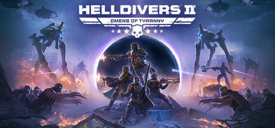
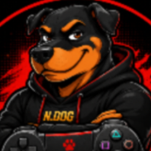
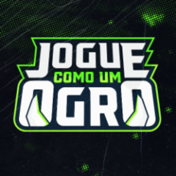

1
Você é um Helldiver
Soldado da Super Earth. A história é uma piada: a “democracia gerenciada” manda você lutar. Você obedece. E explode muita coisa.
Dicas Games
Você cai em uma cápsula num planeta, completa a missão e tenta sair vivo.

Helldivers 2 é um tiro cooperativo. Até 4 pessoas no mesmo planeta. Dá para jogar sozinho, mas o jogo foi feito para o grupo.
1
Soldado da Super Earth. A história é uma piada: a “democracia gerenciada” manda você lutar. Você obedece. E explode muita coisa.
2
Você escolhe o planeta no mapa. O planeta diz contra quem você luta: insetos, robôs ou alienígenas. O equipamento muda junto.
3
Você cai numa cápsula. Faz os objetivos. Chama a nave. Se morrer no fim, o grupo ainda pode te trazer. Se ninguém sair, a missão falha.
4
Além da arma na mão, você chama ajuda da nave: bomba, laser, sentinela, mochila. Uma peça boa contra inseto pode ser ruim contra robô.
Quatro passos. Sempre os mesmos.
No jogo elas têm nome em inglês. Aqui usamos o nome fácil. Toque no botão da carta para ver o que levar contra aquela frente.

Insetos
Bichos gigantes. Correm até você. Querem corpo a corpo.
Quem você vai ver

Robôs
Máquinas de guerra. Atiram de longe. Usam armadura.
Quem você vai ver

Alienígenas
Invasores com energia, escudo e teleporte. Misturam enxame e elite.
Quem você vai ver
A próxima página mostra o item mais fácil e o mais forte. Uma frente de cada vez. Sem ler a lista inteira.
Este site mostra o que levar. A live mostra o que acontece quando a cápsula abre. Segue os canais do Cão Danado e do Jogue como um Ogro, entra no chat e pergunta sobre esse e outros jogos ou de qualquer outros assuntos.

🎮 Tester de games indie. Curto jogar sobrevivência, simulação e FPS. Criador e apresentador do talk show “Na Coleira”. Se quiser falar de esportes, também gosto muito. Chega mais: tira dúvida, troca ideia e joga junto.

Caster (narrador e comentarista) de e-sports. Curto super-heróis, animes, séries, comida japonesa e esporte (F1, tênis e futebol americano são os meus preferidos). Quer falar disso ou de qualquer outra coisa? Chega mais.